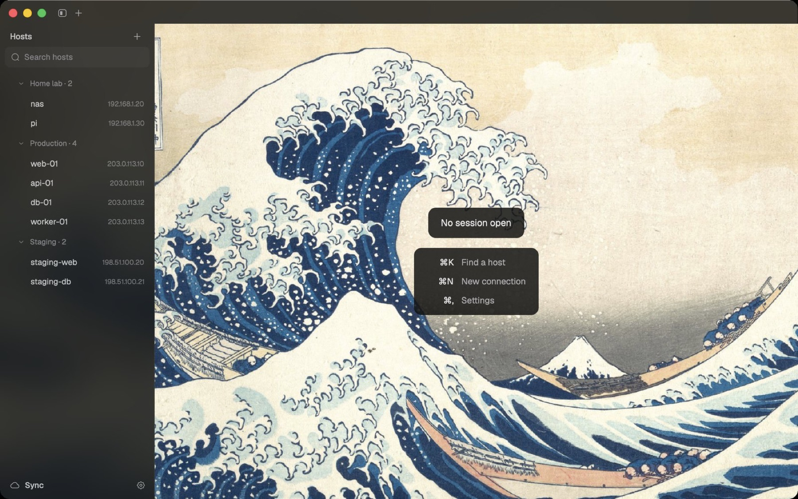
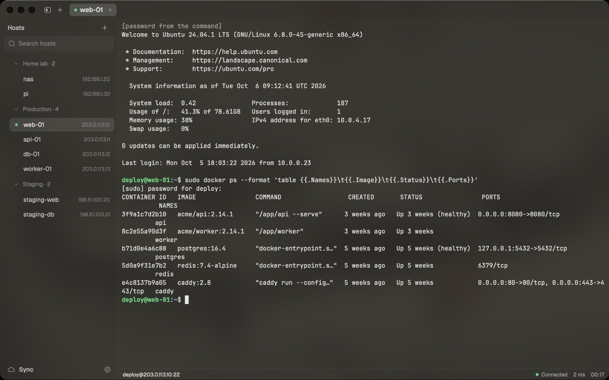
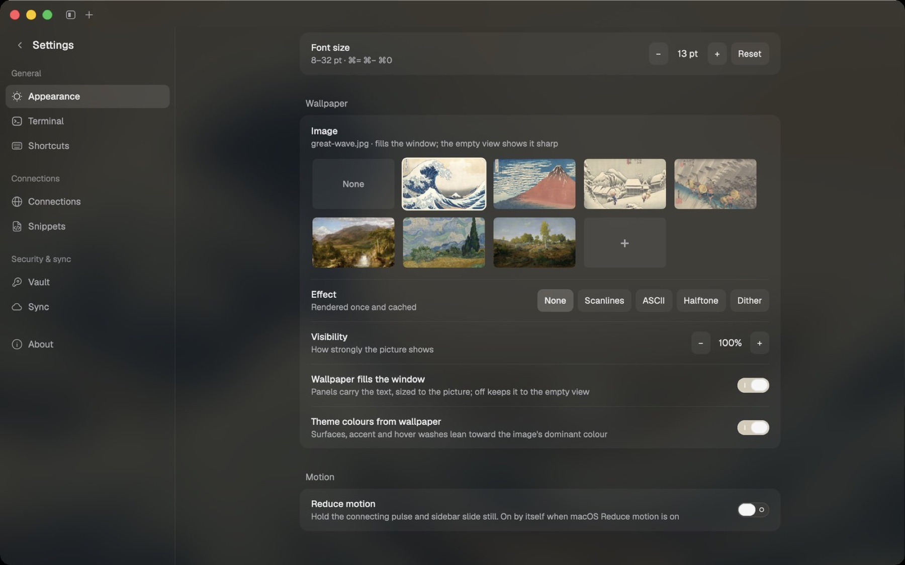
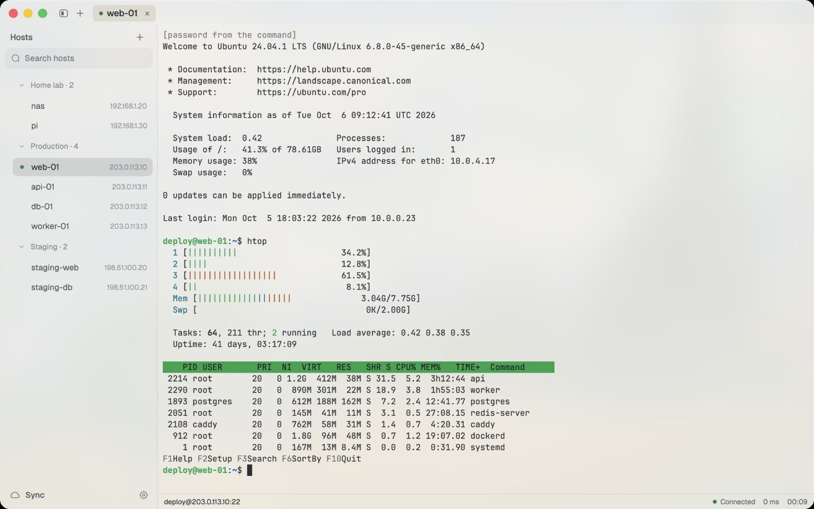

A fast, native SSH client for macOS.
Your servers one click away, passwords that fill themselves, and a window you'll enjoy looking at. Written in Rust on GPUI.
macOS 11+ on Apple silicon. Signed and notarised. Free, GPL-3.0.

Why tern
One click to a shell
Saved connections in groups, ⌘K to jump to any of them, and a status line with latency and session time.
Passwords stay out of the way
Logins come from your SSH key, your password manager (gopass show -o …), or tern's encrypted vault. At a sudo prompt, ⌘\ types the password for you.
Built for real work
Split panes, find in scrollback, clickable links, snippets, SFTP browser, port forwards, ProxyJump, agent forwarding, broadcast input, session logs, and automatic reconnect.
Your setup, backed up
Hosts, snippets and settings sync to a private Git repository you own, encrypted end to end.
Native and light
About 85 MB in Activity Monitor with a wallpaper showing. Crisp on 1080p monitors, on frosted glass over a wallpaper of your choice.
Light and dark
The window takes its colours from the wallpaper, and every text colour stays at least 4.5:1.

A closer look





Everything in the box
Connections
- Groups and tags, search (⇧⌘F), and a ⌘K picker ordered by what you used last.
- One-time import from
~/.ssh/config. - ProxyJump, local, remote and dynamic (SOCKS) forwards, agent forwarding, keep-alive.
- Automatic reconnect with backoff; never after you type
exit. - Two-factor logins, and a hard stop on changed host keys.
Terminal
- Tabs you can rename, reorder and reopen on launch; split panes; broadcast input.
- Find in scrollback, ⌘-click links (including OSC 8), cursor shape, copy on select.
- SFTP browser, session logging, and a status line with latency.
Passwords and keys
- Per-connection password command; tern runs it when asked and never stores the result.
- An age-encrypted vault for passwords and SSH keys, unlocked by PIN or Keychain.
- ⌘\ fills a password prompt. It never types on its own.
Sync
- To a private Git repository through your own
gitand SSH key, or a GitHub gist. - Encrypted with your vault passphrase before it leaves the Mac.
- Merges per file and per host, and only asks about a real conflict.
Memory
tern against the other two SSH clients, on the same Mac, the same day (2026-10-06), the same way. Each app was launched fresh and measured every 15 s for two minutes with macOS footprint (the number Activity Monitor shows), summed over all of its processes. The table gives the settled value at two minutes. "Connected" means one tab logged in to the same server.
| App | Idle | Connected | Processes |
|---|---|---|---|
| tern | 86 MB (108 MB with a wallpaper) | 76 MB (125 MB with a wallpaper) | 1 |
| Tabby | 471 MB | 580 MB | 5 (Electron) |
| Termius | 583 MB | not measured | 7 (Electron) |
Connected, tern needs between a quarter and an eighth of Tabby's memory; idle, between a fifth and a seventh of either app's. The method, raw samples and the plain terminals are in docs/perf.md.
Keyboard
Every shortcut can be rebound in Settings, Shortcuts.
Security
- Host keys are checked against
~/.ssh/known_hosts. A changed key refuses the connection. - Secrets live in the vault (age, scrypt) or in your password manager. They are never written to logs, and never typed into the terminal unless you press ⌘\.
- Sync data is encrypted before it leaves your Mac. The repository only ever sees
.agefiles. - Report vulnerabilities privately, as described in SECURITY.md.
Download tern.
macOS 11+ on Apple silicon. Open the DMG and drag tern to Applications. Releases are signed with a Developer ID and notarised by Apple, so it opens without a warning.
Or build from source (Rust 1.99+):
git clone https://github.com/your-moon/tern && cd tern
scripts/make-local-identity.sh # once: a stable local signature
scripts/bundle-app.sh # builds target/release/bundle/tern.app
cp -R target/release/bundle/tern.app /Applications/
cargo install --locked --path crates/tern # the `tern` command